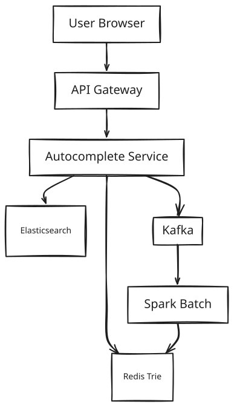

Search Autocomplete / Typeahead System Design
1. What Is Search Autocomplete?
Search autocomplete is the dropdown of suggestions that appears under a search box before you finish typing. You type "a", then "ap", then "app," and a list of likely completions appears and updates on almost every keystroke — "apple," "apple watch," "apple iphone 15" — ranked so the thing you're probably looking for is at the top.
Autocomplete is not search. Search takes a finished query and runs heavy computation to find and rank matching documents. Autocomplete takes an unfinished, growing prefix and has to respond before the user has even stopped typing. They share a search box and nothing else — under the hood they are two different systems built for two different jobs.
At Google scale — hundreds of millions of people typing into a search box every day — the hard part isn't matching text. It's answering every single keystroke, from every user, correctly ranked, in less time than it takes a human to notice a delay.
2. A Day in the Life
Mia is shopping for a new phone. She taps the search box and types "a." Before her finger is even off the screen, a short list of suggestions appears — "amazon," "apple," "airpods" — the same handful of popular completions almost anyone typing "a" would see.
She keeps typing: "ap," then "app." The list re-sorts itself, still updating in what feels like real time, but now it's steering toward things she's likely to actually want. She types "apple," and near the top of the list she now sees "apple iphone" — not because it's the single most popular search in the world attached to that prefix, but because she searched for iPhone cases twice yesterday, and the system has quietly nudged her own suggestions above the generic global ranking.
She taps "apple iphone," and the results load. Somewhere in the background — invisible to her — that completed search gets logged, and it becomes one more small data point that will nudge tomorrow's ranking for the next person who types "apple."
A minute later, thousands of miles away, a friend of Mia's fat-fingers "aple" instead of "apple." He still gets sensible suggestions back, because the system doesn't just give up when a prefix doesn't exactly match anything it knows about.
Neither of them ever thought about a database, a cache, or a ranking algorithm. From here on, this doc is about how that few hundred milliseconds of "it just knows what I want" actually gets built, and rebuilt, for hundreds of millions of people at once.
3. Requirements — and Why They Matter
Scope. In scope: prefix-based suggestions, frequency-weighted ranking, personalization, trending queries, typo tolerance. Out of scope: full-text search results pages, spell correction as a standalone product, query understanding / NLU.
Functional requirements:
- Return top-10 suggestions for any prefix as the user types
- Rank suggestions by global query frequency × recency × personalization score
- Personalize with the user's recent 100 searches, blended with the global ranking
- Serve trending queries, updated hourly from aggregated logs
- Tolerate 1–2 character typos via a fuzzy-match fallback
- Return suggestions within 100ms p99
Point to Ponder: Mia's friend types "aple" — a prefix that matches nothing in the system. Does he just get an empty dropdown?
No — but the system also doesn't run an expensive fuzzy-match check on every single keystroke just in case. The trie lookup is tried first, and only when it comes back with zero matches does the request fall back to Elasticsearch's typo-tolerant search. That's a two-tier design specifically because typos are a small minority (~5%) of all traffic — see §8.4 Deep Dives for why running fuzzy matching as the primary path instead of a fallback would be far too slow to survive at this scale.
Point to Ponder: Mia and a stranger on the other side of the world both type "app" at the same moment. Do they see the same suggestions?
For a short prefix like "app," yes — almost everyone's top-10 for "app" looks the same, so the system doesn't bother personalizing it and instead serves it from a CDN edge cache shared by every user (§8.3 Deep Dives). It's only once the prefix gets longer and more specific — like "apple i" — that personalization starts to matter enough to skip the shared cache and blend in a user's own history (§8.2 Deep Dives).
Non-functional requirements — and why each one matters to a real user, not just as a target:
| Requirement | Target | Why it matters |
|---|---|---|
| Availability | 99.99% | Autocomplete sits in the critical path of every single search — if it's down, the search box itself feels broken, not just a feature within it. |
| Read latency | <100ms p99 | People type faster than a slow network round-trip. Miss this window and the suggestion arrives after the user has already typed the next character, so it reads as unhelpful noise instead of a shortcut. |
| Write latency | Eventual, ~1hr staleness acceptable | A query trending "right now" showing up an hour from now, not mid-keystroke, is an acceptable trade — nobody expects the dropdown to reflect the last five seconds of global search activity. |
| Throughput | 700K read QPS | This isn't a target users see directly — it's simply what "instant suggestions for everyone typing at once" costs at this many concurrent users, and the whole design exists to sustain it. |
| Consistency | AP (eventual) | Suggestions that are an hour stale are a minor annoyance; a system that's split and inconsistent is a broken one. Given the choice, this system always picks staying up and eventually-correct over refusing to answer. |
Consistency isn't one setting for the whole system — different pieces of data need different guarantees, and conflating them would either make everything slower than it needs to be or looser than it can afford to be:
| Domain | Model | Reason |
|---|---|---|
| Global suggestions | Eventual (hourly) | Frequency counts are an aggregate over time — a refresh once an hour is already accurate enough to be useful. |
| Trending queries | Near-real-time (Flink, ~5min) | Trending is specifically about recent spikes, so it needs a much shorter window than the hourly global refresh. |
| User personalization | Read-your-writes | If Mia just searched for something, she expects to see it reflected in her own suggestions the very next keystroke, not an hour later. |
4. Scale, From First Principles
Before choosing a single piece of technology, it's worth working out what the traffic actually looks like — because the numbers themselves end up ruling out entire categories of design.
Start with the users. Assume 500 million daily active users, each running about 10 searches a day. That's 5 billion searches a day. But autocomplete doesn't fire once per search — it fires on every keystroke leading up to it. If the average search takes 4 keystrokes before the user submits, that's:
5B searches/day × 4 keystrokes/search = 20B autocomplete requests/day
What does that mean for peak load? Traffic isn't flat across the day — it spikes. Assuming peak traffic runs about 3× the daily average, spread across 86,400 seconds:
20B requests/day → ~230K QPS average → ~700K QPS at peak
700K requests a second, each one needing an answer inside a 100ms budget — that single number is the one everything else in this design has to survive. And because every one of those requests is a read (the write side — someone finishing a search — happens roughly 100× less often, giving a read:write ratio of about 100:1), the entire system's job is to make that read path as close to instantaneous as physically possible. Almost nothing about the write side matters if the read side can't hold under this load.
Could the ranking just be recomputed live for each of those 700K requests per second? Consider what "compute suggestions" actually means: for a prefix like "a," walking a naive trie means traversing the entire subtree under that node — potentially millions of nodes — and then ranking whatever survives out of roughly a million distinct query terms (the system only needs to track the top ~1 million unique terms in the trie, since — following the same Zipf distribution that shows up everywhere in language — those million terms already cover 95% of all real traffic). Doing that ranking work fresh, per request, at 700K requests a second, means 700K full ranking passes over a million-term dataset every single second. No amount of hardware makes that number small. The only way this works is precomputation — do the expensive ranking work once, offline, on a schedule, and make every read a simple lookup instead of a computation.
What does precomputing that trie cost to store? With the top-1M terms and their precomputed top-K suggestions loaded into memory, each shard of the trie comes out to roughly 230MB — comfortably small enough to live entirely in Redis, sharded 26 ways by first character, rather than anything disk-backed.
And the write side — what does logging every search actually cost? 5 billion searches a day, each logged at roughly 50 bytes, is 250GB of query-log data generated per day. Kept in Kafka with a 7-day retention window for reprocessing, that's about 1.75TB retained at any time — a write volume that's genuinely trivial next to the 700K QPS read problem above.
These numbers are what drive every major decision from here on: the trie has to live in Redis, not disk. Short, globally-identical prefixes get cached at the CDN edge. And on the client, debouncing keystrokes plus a small local cache need to kill a meaningful chunk of requests — in practice around 40% — before they ever leave the browser, because even a beautifully optimized backend shouldn't have to answer a request that didn't need to be sent.
5. High-Level Architecture
Recall Mia typing "app" from §2 — here's what actually happens in the roughly 1–2ms between her keystroke landing and a ranked list appearing on her screen.
Autocomplete is a precomputed prefix-index system optimized for ultra-low-latency reads. The core idea: the system never computes suggestions at the moment someone types. Instead, offline, on a schedule, it precomputes the top-K suggestions for every prefix anyone might type, and stores that list where a read can grab it in one lookup:
This system trades storage for latency by precomputing top-K suggestions
for every prefix — offline, on a schedule — so that every read is O(1).
Precompute: "app" → [apple, application, apple watch, ...]
Read: user types "app" → Redis lookup → return list (1–2ms)
You never compute suggestions at query time. Ever.
This isn't a design preference — it's the only option that survives §4's numbers. At 700K QPS, computing suggestions per request means a full trie traversal of possibly millions of nodes, repeated 700,000 times a second; even just re-ranking the top-1M terms fresh for every keystroke would be 700K ranking passes a second. Neither is remotely achievable. So the trie is inverted: every node in it stores its own already-ranked top-K list, computed once by an offline job.
[!NOTE] Key Insight: The trie is not a search structure at read time — it's a lookup table. A read never traverses or ranks anything; it walks straight to a node and returns a list someone else already computed.
This is one of the most latency-sensitive systems you'll design. The 100ms budget from §3 isn't a nice-to-have — people type faster than 100ms between keystrokes, so a suggestion that arrives late doesn't just feel slow, it feels wrong, appearing after the user has already moved on to the next letter. Every architectural decision below exists to protect that budget.
From Simple to Evolved
The system starts as a handful of services around a trie and grows into a layered pipeline as the caching and aggregation needs above get added in.
Simple Design

Evolved Design
Core Design Principles
| Fast Path | Reliable Path |
|---|---|
| Client LRU cache (0ms, 40% hit rate) | Kafka query log (all searches durably captured) |
| CDN edge cache for 1–3 char prefixes (10ms) | Flink real-time aggregation (5min trending freshness) |
| Redis Trie lookup (1–2ms) | Spark hourly batch (full frequency recompute) |
| Pre-computed topK at each trie node (no DFS) | Trie rebuild job (correctness guarantee) |
The Read Path — Mia Types "app"
Walk through what actually happens between Mia's keystroke and a list on her screen, and each hop exists to absorb traffic before it reaches something more expensive.
The client doesn't fire a network request on every keystroke — that would be 3× more traffic than necessary at this scale — so it debounces at 150ms, well under the threshold where a delay would feel noticeable, and only fires once Mia pauses. Before it fires anything at all, it checks a local LRU cache (keyed by prefix, capped at 200 entries, 5-minute TTL); in practice, because people repeat common prefixes constantly (typing, backspacing, retyping), this alone answers about 40% of requests with zero network round-trip.
On a cache miss, the request goes out — and for short prefixes (1–3 characters, like "a," "ap," "app") it hits a CDN edge cache first. This works because the top-10 suggestions for "app" are identical for essentially all 500 million users; there's no reason to personalize a prefix everyone shares, so it's cached without a user ID and served straight from the edge.
Only on a CDN miss does the request reach the Autocomplete Service — stateless and horizontally scaled behind a load balancer — which does two things in parallel: it looks up the precomputed top-K list for the prefix from the Redis trie (sharded by first character, an O(prefix-length) lookup with no traversal at request time), and it pulls the last 100 searches for this user from a small Redis sorted set. A score blender then combines the two — global score weighted 0.7, personal score weighted 0.3 — and returns the top-10, sorted, typically inside 1–2ms once the request reaches Redis at all.
User types "app"
|
[Client LRU cache] hit? → return immediately (0ms)
|miss
[CDN edge cache] hit? → return in ~10ms (short prefix = global result)
|miss
[Autocomplete Service]
|
[Redis Trie] O(prefix_len) lookup → topK list at trie node
|
[User History] Redis: last 100 searches for this userId
|
[Score Blender] global score × 0.7 + personal score × 0.3
|
Return top-10 JSON
The Write Path — Someone Completes "apple iphone"
Every read above depends on the trie already having the right answer precomputed — which means something has to keep that precomputed data honest. When a search completes, the client fires POST /search/complete fire-and-forget, so logging never blocks the page the user is actually waiting on. That event lands in Kafka as {userId, query, ts, sessionId} — chosen specifically because, at 5 billion searches a day, any synchronous write to a shared data store would become a bottleneck immediately.
Point to Ponder: Why not just update the trie the instant a search completes, so a viral query shows up in suggestions immediately?
Because at 5 billion searches a day, that works out to roughly 58,000 trie writes a second, and every one of them would need to propagate its effect on the top-K list up every ancestor node in the trie — the same nodes millions of concurrent reads are hitting. Concurrent writers would need distributed locks across shard boundaries, and any race between them risks silently corrupting a top-K list. Batch rebuilding the trie once an hour sidesteps all of it: the trie is immutable between rebuilds, so reads are always internally consistent, and freshness for actual spikes is handled separately by a 5-minute Flink trending window rather than by touching the trie itself. See below for exactly how that batch/streaming split works.
From Kafka, the event is picked up by two independent consumers running at very different speeds. Flink maintains a sliding 5-minute window that aggregates frequency counts per term and writes recent spikes into a Trending Redis Set (trending:{category}, 5-minute TTL) — this is the layer that makes "everyone is suddenly searching this" visible quickly, deduplicated on a (userId, sessionId, query) key so a single user re-searching the same thing doesn't inflate the count. Separately, Spark runs an hourly batch job over the last hour of Kafka logs, recomputing full frequency scores with a recency decay (score = count × e^(-λ×age_hours)) and writing them into a Cassandra table partitioned by term.
The Trie Builder job then runs hourly, reading the current top-1M terms by score out of Cassandra, rebuilding the in-memory trie from scratch, precomputing the top-K list at every single node, and publishing the result to Redis — as a hot-swap (trie:v2 is populated first, then atomically renamed into place) so there's zero read downtime during the rebuild. Delivery through this whole pipeline is at-least-once — a Kafka consumer replays from its last committed offset on crash, with the (userId, sessionId, query) key handling any resulting duplicates, and failed publishes to the trie retry with exponential backoff before landing in a dead-letter queue.
[!IMPORTANT] This aggregation pipeline is a correctness requirement, not a performance optimization. Without it, a genuinely high-frequency query like "apple" would never rise above a rarely-searched one like "aardvark" just because of how frequency gets counted and decayed over time — ranking would be meaningless without something aggregating real signal from noise.
Fuzzy Fallback — A Typo Like "aple"
When the Autocomplete Service looks up a prefix in the Redis trie and gets nothing back — because it's not one of the top-1M terms the trie tracks, as happens with a typo — it falls back to Elasticsearch with a fuzzy query (fuzziness: 2, i.e. Levenshtein distance ≤ 2), which is how "aple" comes back as "apple," "maple," "ample." This is deliberately a fallback and not the primary path: running Levenshtein-distance matching over a million terms for every one of 700K requests a second would overwhelm even a large Elasticsearch cluster, but only a small minority of traffic is actually a typo, so the trie handles the 95% case and Elasticsearch only ever sees the long tail.
6. API Design
The API is small because almost the entire system exists to serve one endpoint fast — the split that does exist reflects the read-heavy, write-fire-and-forget shape established in §4: one endpoint answers the hot read path, one is a variant of it for a specific surface (trending), and one exists purely to feed the write pipeline without ever touching it synchronously.
| Endpoint | Method | Params | Response |
|---|---|---|---|
/autocomplete |
GET | q={prefix}&uid={userId}&limit=10&lang=en |
{ suggestions: [{term, score, type}] } |
/autocomplete/trending |
GET | category={cat}®ion={region} |
Top trending terms |
/search/complete |
POST | { query, userId, sessionId, ts } |
200 OK (async log to Kafka) |
The two design choices worth calling out explicitly, since they're not obvious from the table alone: uid on /autocomplete is optional, not required — an anonymous user simply gets the global, non-personalized ranking rather than being rejected. And /search/complete is deliberately fire-and-forget: it returns 200 OK the instant the event is queued to Kafka, not once it's been aggregated anywhere, which is what lets 5 billion searches a day get logged without ever adding latency to the page the user is already looking at. One scale note worth keeping in mind: each /autocomplete response is roughly 500 bytes, which at 700K QPS works out to about 350MB/s of egress — exactly why the CDN layer from §5 isn't optional at this traffic level.
7. Data Model
Six distinct pieces of data live in this system, and none of them belong in the same store — grouping them by how they're actually read and written makes the storage choice for each one close to automatic.
The precomputed, ultra-hot read data lives entirely in Redis, in memory. The trie itself — the top-1M terms with a precomputed top-K list at every node — has to answer a lookup in a millisecond or two at 700K QPS, which rules out anything disk-backed outright; it's sharded 26 ways by first character so no single node has to hold the whole structure (§8.1 walks through exactly why the trie is shaped the way it is). A user's search history lives in Redis too, as a sorted set keyed by timestamp with a 30-day TTL, because personalization needs the last 100 searches back in well under a millisecond on every single request. Trending terms get the same treatment for a different reason: they only need to be roughly right for five minutes at a time, so a Redis sorted set with a 5-minute TTL is both the cache and the staleness bound in one mechanism.
The durable, aggregated scoring data lives in Cassandra, because it's write-heavy and read by term, not by user. Query frequency scores are recomputed for up to a million terms every hour from 5 billion daily events — that's a write pattern Cassandra is built for, and partitioning by term gives the Trie Builder job an O(1) lookup per term when it rebuilds the trie.
The source-of-truth log lives in Kafka and is never queried directly. Every raw search event is retained there for 7 days specifically so the aggregation pipeline (§5's write path) can be replayed or reprocessed if something downstream needs to be rebuilt — it's a durability and reprocessing mechanism, not a query surface.
The one entity that doesn't fit the "prefix lookup" shape at all gets its own specialized store. Typo-tolerant fuzzy matching needs n-gram tokenization, not prefix indexing, so it lives in Elasticsearch — a completely different access pattern from everything else in this table, which is exactly why it's never used for ordinary prefix queries.
Key: trie:{first_char}
Field: {prefix}
Value: [{term: "apple iphone", score: 0.93}, {term: "apple watch", 0.85}, ...]
(topK=10 pre-computed at each node)
Key: user:history:{userId}
Type: Sorted Set
Score: Unix timestamp
Value: search term
TTL: 30 days
ZREVRANGE user:history:123 0 99 → last 100 searches
| Column | Type | Note |
|---|---|---|
| term | text (PK) | partition key |
| global_score | float | frequency × recency decay |
| count_7d | bigint | raw count, last 7 days |
| count_1h | bigint | last hour (for trending signal) |
| updated_at | timestamp | last Spark batch run |
| Entity | Storage | Key Columns |
|---|---|---|
| Trie (top-1M terms + topK at each node) | Redis Cluster (26 shards) | trie:{first_char} → prefix → topK list |
| Query frequency scores | Cassandra | term (PK), global_score, count_7d, count_1h, updated_at |
| User search history | Redis Sorted Set | user:history:{userId}, score = timestamp, TTL 30d |
| Trending terms | Redis Sorted Set | trending:{category}, score = count, TTL 5min |
| Raw search logs | Kafka (7-day retention) | source of truth for reprocessing; never queried directly |
| Fuzzy index | Elasticsearch | n-gram tokenization; never used for prefix queries |
8. Deep Dives
8.1 The Trie: A Precomputed Prefix Index at Scale
This is the single hardest problem in the whole system, and everything else — the caching, the sharding, even the write pipeline — exists in service of it: return the top-10 completions for any prefix, out of a million tracked terms, in a couple of milliseconds, at 700,000 requests a second.
The obvious first idea is to just use Elasticsearch for everything — run a fuzzy query on every keystroke. That doesn't survive contact with the traffic: a full ES query for every one of 700K requests a second needs over a hundred nodes just to keep up, and even then p99 latency lands somewhere around 50–200ms under load — several times over budget before the request has even reached the ranking step. A second idea is a standard trie, storing terms only at leaf nodes the way a textbook trie normally works. To find the top-10 completions for "app," that means a depth-first traversal of the entire subtree under the "p" node — which, for a common prefix, can be 200,000 nodes or more. At 700K QPS, every single request would trigger a traversal of that size, and the system collapses under its own weight almost immediately. A third idea tries to dodge the network entirely by holding the whole trie in each service instance's own memory — but a million terms, at roughly 10 characters average with normal trie node overhead, comes out to about 6GB per process; multiply that by a hundred service instances and it's 600GB of RAM spent duplicating the exact same structure everywhere.
The way out of all three is the same insight from §5, applied specifically to the trie's shape: every node stores its own already-ranked top-K list, computed once, offline, by a batch job — not derived by traversal at the moment someone reads it.
Node "app" → ["apple", "application", "apple watch", "appstore", ...]
Node "appl" → ["apple", "application", "apple watch", ...]
Node "apple" → ["apple", "apple watch", "apple store", ...]
Reading "apple" now means walking 5 nodes and reading the list already sitting at the last one — an O(prefix-length) lookup, with no traversal and no computation at read time. All of the expensive work — the depth-first search that would otherwise happen per-request — is done exactly once, offline, by the Trie Builder job from §5's write path, and never again until the next hourly rebuild. In practice, HGET trie:a prefix=apple resolves in about 1–2ms. The cost that buys this speed is paid entirely on the write side: the hourly Trie Builder computes every node's top-K bottom-up from the leaves to the root, and that computation costs memory too — 1 million nodes, each holding a 10-suggestion list at roughly 50 bytes per suggestion, comes to about 500MB per shard, or 13GB total across all 26 shards. That's a comfortable amount of Redis memory in exchange for turning every read into a lookup instead of a search. The trade-off accepted in return is up to an hour of staleness — a query that goes viral right now won't show up in the precomputed list until the next rebuild — which is acceptable specifically because the separate Flink trending layer (§5) exists to catch exactly that spike signal in the meantime.
[!NOTE] Key Insight: A trie by itself only gets you fast traversal to a node — it says nothing about what to return once you're there. The topK list at every internal node is what turns that traversal into an answer; trie structure and precomputed ranking are two halves of one solution, not separate optimizations layered on top of each other.
Precomputing the trie solves the "what to return" problem; it doesn't yet solve "where does it live once it's too big for one machine." At a million terms with a top-K list at every internal node, the trie doesn't fit comfortably in a single Redis instance, and the obvious sharding strategy — hash the key, same as you'd shard almost any other dataset — actively breaks this one. A query for "apple" might hash to one shard, while "appl" hashes to a different shard, and "app" to a third; a single prefix lookup would need to fan out to all 26 shards to be sure it found the right one, turning one lookup into 26 network calls and 26× the latency.
The fix is to shard by the actual structure of the data instead of hashing it away: split the trie by prefix range, so every possible first character maps deterministically to exactly one shard —
a–f → Trie Server 1 (all queries starting with a, b, c, d, e, f)
g–m → Trie Server 2
n–s → Trie Server 3
t–z → Trie Server 4
0–9 → Trie Server 5 (numeric + special)
A query for "apple" starts with "a," so it always resolves to exactly one shard — one lookup, zero cross-shard coordination, no scatter-gather. The Trie Builder job gets the same benefit on the write side: rebuilding the "a"–"f" range only ever touches that one shard, with nothing to coordinate against the other four. As traffic grows, this scheme refines cleanly too — moving from a 1-character split to a 2-character split (up to 676 possible shards) spreads load more evenly without changing the underlying strategy. Each range shard is comfortably sized: the "a–f" range covers roughly 230,000 unique terms across those six letters, and with a 500-byte top-K list per node, that works out to about 115MB — well within what a single Redis instance handles easily.
The one thing prefix-range sharding doesn't fix on its own is that not all letters are typed equally often: the "s" shard runs at roughly 4× the traffic of the "z" shard, since common words like "search," "sports," and "shop" all start with "s." The fix isn't to re-shard — it's read replicas specifically for the hot shard, so the uneven traffic gets absorbed by extra read capacity rather than by rebalancing the whole scheme.
[!NOTE] Key Insight: Shard by prefix range, not by hash. This is the only sharding strategy that guarantees every prefix query hits exactly one shard with zero cross-shard coordination. Hash-sharding autocomplete trie = scatter-gather nightmare.
8.2 Ranking and Personalization
"Apple" gets searched 10 million times a day; a specific query like "apple iphone 15 pro max" gets searched maybe 50,000 times. Raw frequency alone would always favor the former — reasonable most of the time, but it also means a user in Tokyo who consistently searches Apple products should probably see "apple watch" ranked above "amazon prime," and "apple store tokyo" above "apple store london," even though neither of those beats "apple" in raw global volume. Personalization here is a genuine requirement, not a nice-to-have, and it can draw on several real signals: what this specific user has searched before, their location (someone in Mumbai should see "amazon in" before "amazon us"), context like time of day, and even device (mobile users tend to type shorter queries and want shorter suggestions back).
The naive fix — just sort by raw frequency count — has an additional failure mode beyond ignoring personalization entirely: it has no sense of time. A term that used to be searched constantly stays at the top forever under pure frequency, even long after nobody actually searches it anymore, because a count that accumulated over years never decays.
The actual ranking blends three factors into one score:
global_score = frequency_score × recency_decay
= count_7d × e^(-λ × age_days) where λ = 0.1 (half-life ~7 days)
personal_score = 1.0 if in user's last 100 searches, else 0.0
(boosted by recency: searches from last 24hr = 2.0)
(boosted by location match: +0.5 if region matches)
final_score = global_score × 0.7 + personal_score × 0.3
The 70/30 split is deliberate: global relevance has to dominate, because a user who searched "apple" once shouldn't have it permanently outrank everything else in their own suggestions forever after — that would make personalization feel more like it's stuck, not helpful. The 30% personal weight is enough to visibly nudge the ranking toward a user's own history without letting it override what's globally relevant.
The two halves of that score are computed in completely different places and at completely different times. global_score is precomputed entirely offline — Spark writes it to Cassandra on its hourly batch run, and the Trie Builder bakes it into each node's top-K list, so by the time a request arrives, it's already sitting there for free. personal_score, by contrast, is the one piece of this entire read path computed at request time — pulled from a user's own Redis history (ZREVRANGE user:history:{userId}) in about half a millisecond — and the two get blended into final_score by the Autocomplete Service on every single request before the top-10 are selected.
That split isn't a stylistic choice — precomputing personalized suggestions the same way global ones are precomputed is simply impossible at this scale: 500 million users × 1 million prefixes would mean 500 trillion precomputed entries, which no infrastructure holds. The per-user part stays cheap not because personalization is inherently fast to compute, but because it's kept deliberately small — a 100-item lookup, not a full ranking pass.
[!NOTE] Key Insight: Precomputation covers 70% of the ranking signal (global score in trie). Personalisation covers the remaining 30% at request time from a 100-item Redis set per user. This is the only architecture that satisfies both latency (<100ms) and personalisation at 500M user scale.
8.3 CDN Caching for Short Prefixes
At 700K QPS, a huge share of that traffic is redundant in a very specific way: millions of different people are typing "a," "ap," and "app" at the same moment, and none of them need a personalized answer for those first few characters — the top-10 for "app" looks essentially identical whether it's Mia or a stranger on another continent typing it, because personalization only starts to meaningfully change the ranking once the prefix gets longer and more specific.
That makes short prefixes a close-to-perfect fit for CDN caching. Prefixes of 1–3 characters get cached at the CDN edge with a 5-minute TTL and, critically, no user ID in the cache key — since the answer doesn't vary by user anyway, caching per-user would just waste cache space storing the same list under a thousand different keys. Prefixes of 4 or more characters skip the CDN entirely and pass through to origin, since that's the point where uid starts to actually change the response. The cache key itself is just autocomplete:{prefix}:{lang}:{region} — no user identifier at all.
The numbers work out comfortably: there are 26³ = 17,576 possible 3-character prefixes, but the top 1,000 of those already cover roughly 80% of all short-prefix traffic, and at 10 suggestions per prefix and about 50 bytes per suggestion, that's only around 500KB of data per CDN point of presence — trivially small enough to sit in a CDN's fastest edge cache tier. The 5-minute TTL isn't an arbitrary round number either — it's matched deliberately to the Flink trending window from §5, so that a viral query never has to wait more than 5 minutes to start surfacing even at the CDN layer.
[!NOTE] Key Insight: CDN caching of 1–3 char prefixes offloads ~40–60% of all autocomplete traffic. The origin never sees "a" or "ap" requests from cold users.
8.4 Fuzzy Matching — Typo Tolerance
When Mia's friend types "aple," the trie simply has no node for it — it isn't one of the million terms being tracked, because it's a typo, not a real query. The naive fix is to check the typed string against every term in the trie using edit distance — but Levenshtein distance across a million terms, run on every request, is roughly O(1M × prefix-length) of work per lookup, far too slow to run for every single keystroke at this scale.
The actual design keeps that expensive check completely off the hot path by making it a fallback, not the primary lookup: the trie is tried first and handles about 95% of all traffic as an exact prefix match; only when the trie returns zero results does the request fall through to Elasticsearch, which uses n-gram tokenization (min length 2, max length 3) with fuzziness: AUTO to find near-matches. The reasoning for keeping ES as a fallback rather than the primary store is almost entirely a latency argument: the trie answers in 1–2ms, while Elasticsearch's fuzzy queries take 50–200ms under load — 10 to 100 times slower — and since only around 5% of queries are actually typos, routing all traffic through the slower path would be paying that cost for the 95% of requests that never needed it. The trade-off accepted is that the fuzzy path really is slower, around 150ms end to end, but it only ever serves the minority of traffic that has no other option.
Elasticsearch's index is built specifically for this: an n-gram analyzer tokenizes "apple" into fragments like "ap," "app," "appl," "apple," "ppl," "pple," "ple," and so on, so a query like { match: { term: { query: "aple", fuzziness: "AUTO" } } } can match "apple" (edit distance 1) and "maple" (edit distance 2) even though neither shares an exact prefix with the typo.
[!NOTE] Key Insight: Elasticsearch is not the primary autocomplete store — it's the typo fallback. Using ES for all prefix queries at this scale would require 100+ nodes and still lose to a well-designed Redis trie on latency.
9. Bottlenecks, Failure Scenarios & Trade-offs
At 500M DAU, 700K QPS peak, a million trie terms, and 250GB/day of query logs, the first thing to actually strain under 10× more load isn't the database — it's trie read throughput on the busiest shards, since the same uneven-letter-popularity problem from §8.1 ("s" running at roughly 4× "z") only gets worse as total volume grows. Read replicas on the hot shards are the direct fix, spreading that read load without touching the sharding scheme itself. The Trie Builder job hits its own ceiling next: rebuilding a million terms' worth of top-K lists inside a one-hour window gets tighter as term count grows, and the fix is to shard the builder itself so it rebuilds each Redis shard in parallel, which also opens the door to rebuilding every 15 minutes instead of every hour if staleness needs to shrink. Kafka ingest scales in the most straightforward way of the group — even at 10× scale, pushing 50B events/day through the pipeline, the fix is simply more partitions, split by first character of the query, and more consumers — since the write side was never the bottleneck to begin with (§4). The Autocomplete Service itself barely needs special handling: it's stateless, so auto-scaling on QPS is enough, with no state to migrate between instances. The CDN origin shield needs attention last: at 10× scale there are simply more distinct prefixes being requested, which means more cache misses reaching origin, addressed by adding a regional aggregator in front of origin and lengthening the TTL on 4+ character prefixes.
A concrete version of that first bottleneck is a spike scenario: some real-world event causes the "google" prefix to suddenly run at 10× its normal QPS. Three layers absorb it in sequence — the CDN already has "goo," "goog," and "googl" cached at the edge and simply keeps serving them; the Redis read replicas on the "g" shard absorb whatever gets through to origin; and within about 5 minutes, Flink's trending window notices the spike and promotes the event-specific term into the Trending set, so the ranking actually reflects what's happening in near-real-time rather than waiting for the next hourly rebuild. That last point ties back to a trade-off worth naming directly: rebuilding the trie more often buys freshness at a real CPU cost — a 15-minute rebuild cadence keeps trending terms fresher but runs the rebuild job 4× as often, a 1-hour cadence (the one actually chosen) is a comfortable middle ground, and a 6-hour cadence would be cheap but noticeably stale for anything going viral. The chosen combination — an hourly full rebuild plus the 5-minute Flink trending overlay running alongside it — is what gets the CPU savings of infrequent rebuilds without giving up freshness for spikes, since the overlay handles exactly the case the slow rebuild can't.
9.1 Failure Scenarios
Failures in this system split cleanly along the same line as everything else — ephemeral state fails soft and self-heals, durable state fails hard and needs an actual recovery mechanism.
On the ephemeral side: if a Redis trie shard goes down, that shard's prefixes simply return empty until Sentinel or Cluster promotes a replica, which completes in under 30 seconds — and during that gap, the design falls back to Elasticsearch for the affected prefixes rather than showing nothing at all. If the user-history Redis instance runs out of memory, personalization silently turns off — the Autocomplete Service detects the empty history response and falls back to pure global suggestions rather than erroring. A CDN serving a stale or poisoned cache entry is bounded by its own 5-minute TTL, which is short enough to self-heal on its own, with a manual CDN purge API available for the rare case that needs an immediate fix. And if the Flink trending job falls behind, the Trending Redis Set's own TTL simply expires, and the service quietly falls back to plain global frequency ranking — with an alert firing if that lag passes 10 minutes.
On the durable side, recovery takes real machinery instead of just waiting out a TTL. A Kafka consumer crash means query logs stop being aggregated until the consumer restarts and replays from its last committed offset — the same (userId, sessionId, query) dedup key from §5 prevents that replay from double-counting anything. If the Trie Builder job fails partway through a rebuild, the previous trie simply stays live — it's never torn down until the new one successfully swaps in — so the practical impact is a stale trie for up to two hours (one missed cycle plus the next retry) rather than a broken one, with an alert firing and the next hourly run retrying automatically. If Elasticsearch itself degrades, the ~5% of traffic that depends on fuzzy fallback just gets an empty result for typo queries — exact-prefix matches through the trie are entirely unaffected, so the system degrades gracefully rather than failing across the board.
9.2 Trade-offs
Primary Storage: Redis Trie vs Elasticsearch
The two systems are built for genuinely different jobs, and the gap shows up everywhere: Redis Trie answers in 1–2ms because a prefix lookup is O(prefix-length) and exact, while Elasticsearch takes 20–200ms because it's built around n-gram matching that's approximate, not exact-prefix, by design. That difference in access pattern flows straight into everything else — Redis Trie holds a million terms in roughly 6.5GB, while the inverted-index overhead of doing the same in Elasticsearch costs around 50GB for the same data. Redis Trie only updates via the hourly batch rebuild, whereas Elasticsearch supports near-real-time upserts natively — the one place ES structurally has the advantage. And on raw throughput, a sharded Redis Trie clears 700K+ QPS, while a single Elasticsearch cluster tops out around 50K QPS without unusually heavy hardware behind it. Elasticsearch does have one thing Redis Trie fundamentally lacks: native, flexible fuzzy matching — which is exactly why it isn't discarded, just demoted to a fallback role.
Chosen: Redis Trie for primary lookups, Elasticsearch for fuzzy fallback only — each store doing the one job it's actually built for.
[!NOTE] Key Insight: Elasticsearch is the wrong primary store for autocomplete at Google scale. It's designed for full-text relevance ranking, not millisecond prefix lookup at 700K QPS. Redis Trie wins on latency; ES fills the typo gap.
Trie Update: Real-time vs Batch
Updating the trie in real time, on every search event, would deliver freshness in under a second — but at 5 billion events a day, that's 5 billion trie writes needing to land somewhere, each one requiring genuinely complex concurrency handling to avoid corrupting a shared structure being read from simultaneously, with a real risk of race conditions producing partial or corrupted updates. Batch rebuilding hourly gives up that sub-second freshness in exchange for something far simpler: one aggregated rebuild an hour, with a simple, atomic swap into place, at the cost of up to an hour of staleness rather than none.
Chosen: Batch rebuild every hour, paired with the Flink trending overlay from §5 running alongside it.
[!NOTE] Key Insight: Real-time trie updates at 5B events/day would require distributed locking on every trie node — a distributed systems nightmare. Batch rebuild with atomic hot-swap is far simpler and correct. Trending Flink layer buys back freshness where it matters.
CDN Caching: Prefix Length Cutoff
Short prefixes (1–3 characters) have no personalization to protect — the results are identical for essentially every user — so caching them at the CDN edge captures roughly 60% of all autocomplete traffic at effectively zero marginal cost. Longer prefixes (4+ characters) are exactly the opposite case: uid genuinely changes the answer through personalization, so there's nothing useful to cache without a user in the key, and those requests pass straight through to origin.
Chosen: Cache only 1–3 character prefixes at the CDN edge, with no user ID in the key; everything longer goes to origin.
[!NOTE] Key Insight: "app" suggestions are the same for 500M users. Caching them at CDN edges with no personalisation collapses 60% of origin traffic to zero cost.
Sync vs Async Aggregation
Updating frequency counts synchronously, in the same request path as the search itself, would mean every one of 5 billion daily searches needs to touch a shared piece of state before it can be considered "done" — and at 700K QPS, a shared trie write lock on that path is an instant serialization bottleneck, since only one writer can hold the lock at a time regardless of how many requests are waiting.
Chosen: async aggregation via Kafka, decoupled entirely from the search request path.
[!IMPORTANT] Kafka plus batch aggregation is what makes 5 billion daily search-completion events survive without ever forcing a synchronous write to shared frequency state. Decoupling write throughput from read performance this way is what keeps the trie internally consistent under concurrent load, rather than something that has to be locked to stay correct.
10. Frontend Notes
Autocomplete is roughly 90% backend and 10% frontend — but that remaining 10% is what decides whether the feature feels instant or feels janky, and almost all of it comes down to one job: keep the client from firing requests it doesn't need to, and keep the dropdown from flickering when the ones it does fire come back out of order.
The first and most important piece is debouncing rather than throttling. Throttling fires at fixed intervals regardless of what the user is doing, so typing "apple" would still fire a request for "a," "ap," "app," "appl," and "apple" one after another. Debouncing instead waits for the user to actually pause, so that same word typically fires once, around "appl" or "apple," rather than five separate times — eliminating roughly 60% of outbound requests with no perceptible cost to the user, since a pause of 150ms is well below the threshold where a response feels delayed:
const debouncedFetch = useMemo(
() => debounce((query) => fetchSuggestions(query), 150),
[]
);
Debouncing alone doesn't fully solve the ordering problem, though — a fast typist can still get five requests airborne within 500ms of each other, and network conditions being what they are, responses don't always arrive in the order they were sent. Without anything to guard against that, an older response for "app" can land after a newer one for "apple," and the dropdown flickers back to a stale list. AbortController fixes this directly: every new request cancels whatever request preceded it, so only the most recent one is ever allowed to resolve.
const controllerRef = useRef(null);
const fetchSuggestions = async (query) => {
controllerRef.current?.abort(); // cancel previous in-flight request
controllerRef.current = new AbortController();
const res = await fetch(`/autocomplete?q=${query}`, {
signal: controllerRef.current.signal
});
};
On top of debouncing and cancellation, a small client-side LRU cache catches the case where a user backspaces and retypes something they already saw a moment ago — typing "apple," backspacing to "appl," then retyping "apple" again resolves instantly from cache instead of round-tripping to the server, which in practice serves around 40% of all lookups with zero network cost:
const cache = new Map(); // LRU, max 200 entries, TTL 5min
const getFromCache = (prefix) => {
const entry = cache.get(prefix);
if (!entry) return null;
if (Date.now() - entry.ts > 300_000) { cache.delete(prefix); return null; }
return entry.suggestions;
};
Finally, the dropdown itself has to behave like a real UI control, not just a list that appears and disappears. Arrow Up/Down should move focus through the suggestions, Enter should select the highlighted one, and Escape should close the list — with aria-activedescendant announcing the currently-focused suggestion to screen readers so keyboard and assistive-technology users get the same experience as a mouse user. One specific pitfall worth calling out: closing the dropdown on a blur event breaks mouse selection outright, because blur fires before the click event that was supposed to select an item ever gets a chance to run. Using mousedown with preventDefault instead avoids that race entirely.
11. Evaluation: Did We Meet the Requirements?
Five non-functional requirements were set out in §3. Here's how the design actually satisfies each one — not just what was promised, but the specific mechanism doing the work.
Availability (99.99%): No single point of failure sits on the read path. Redis Sentinel/Cluster failover recovers a downed trie shard in under 30 seconds, and Elasticsearch stands in as a fallback for that shard's prefixes in the meantime (§9.1). Because the trie itself is rebuilt fresh every hour rather than mutated in place, a failed rebuild simply leaves the previous, still-good trie live instead of taking anything down.
Read latency (<100ms p99): The entire read path in §5 is a chain of in-memory lookups — client cache, CDN edge, Redis trie, Redis user history — with the only genuinely computational step (blending global and personal scores) being simple arithmetic over two already-fetched numbers. Nothing on this path touches a disk-backed store or does a traversal at request time, which is exactly what keeps it inside budget at 700K QPS.
Write latency (eventual, ~1hr staleness acceptable): This requirement isn't an accident of the design — it's the reason the design looks the way it does. The Trie Builder's hourly batch rebuild (§5, §8.1) is deliberately not real-time, because real-time trie mutation at 5B events/day would require exactly the distributed locking that batch rebuilding was chosen to avoid (§9.2). The Flink trending overlay exists precisely to make that hour of staleness tolerable for the cases — viral spikes — where it otherwise wouldn't be.
Throughput (700K read QPS): This number wasn't hit after the fact — it's the number that ruled out every alternative before a single component was chosen (§4, §8.1). Precomputing the trie, sharding it by prefix range, and layering client/CDN caching in front of it are all direct responses to this one figure.
Consistency (AP, eventual): Every eventual-consistency decision in this design is deliberate, not incidental: global suggestions refresh hourly because frequency is inherently an aggregate signal, trending refreshes every 5 minutes because that's the freshness spikes actually need, and personalization is read-your-writes because a user's own last search has to show up in their own suggestions immediately even while everything else stays eventually consistent (§3).
| Requirement | Mechanism |
|---|---|
| Availability 99.99% | Redis Cluster/Sentinel failover (<30s) + Elasticsearch fallback during shard outage |
| Read latency <100ms p99 | Client cache → CDN → Redis trie → Redis history, all in-memory, no disk on the hot path |
| Write latency ~1hr staleness | Hourly Trie Builder batch rebuild, decoupled from the read path entirely |
| Throughput 700K QPS | Precomputed trie + prefix-range sharding + client/CDN caching — the architectural response to §4's numbers |
| Consistency AP (eventual) | Per-domain consistency: hourly global, 5-min trending, read-your-writes personalization |
12. Conclusion
The entire design rests on one refusal: never compute a suggestion at the moment someone asks for it. Every million-term ranking, every frequency recalculation, every personalization blend that can be done ahead of time is done ahead of time, offline, on a schedule — leaving the read path with nothing to do but walk a few trie nodes and merge two already-known numbers. The hardest problem wasn't ranking quality or typo tolerance; it was figuring out exactly which piece of this system could tolerate an hour of staleness (the trie) and which couldn't tolerate any (a user's own last search showing up in their own suggestions) — and building two entirely different mechanisms, batch and real-time, to serve each one without either compromising the other.
13. Interview Summary
Key Decisions
| Decision | Problem it solves | Trade-off accepted |
|---|---|---|
| Pre-computed topK at every trie node | 700K QPS read — DFS at request time is O(subtree), unbounded | Higher write-time cost (hourly rebuild DFS) |
| Shard trie by first character | Single Redis node can't serve 700K QPS; avoids cross-shard scatter-gather | Uneven shard load (shard "s" is 4× busiest) |
| CDN cache for 1–3 char prefixes | Short prefixes identical for all users — no need to hit origin | 5-min staleness for trending on short prefixes |
| Kafka + hourly Spark batch | 5B events/day can't be applied synchronously to shared trie state | 1-hour staleness for new trending terms |
| Flink 5-min trending overlay | Viral queries need fresher signal than 1hr | Trending displayed separately, not merged into trie |
| Elasticsearch as fuzzy fallback only | Typos are ~5% of traffic; ES is 100× slower than trie for prefix | Fuzzy fallback is slower (~150ms); acceptable for error path |
| Personalisation: 0.7/0.3 blend | Pure global ranking ignores user intent; pure personal ranking surfaces niche terms | Slight ranking divergence from global relevance |
Fast Path vs Reliable Path
Fast Path (latency-optimised):
User keystroke
→ 150ms debounce
→ Client LRU cache (0ms, 40% hit)
→ CDN edge cache (10ms, 60% of short-prefix traffic)
→ Redis Trie shard (1-2ms)
→ Personal history blend (0.5ms)
→ Top-10 response
Reliable Path (correctness-guaranteed):
Search completion event
→ Kafka (durable log, at-least-once)
→ Flink (5min trending freshness)
→ Spark (hourly full frequency recompute)
→ Cassandra (query frequency source of truth)
→ Trie Builder (pre-compute topK)
→ Redis atomic swap (zero-downtime update)
Key Insights Checklist
[!TIP] Say these out loud in the interview:
- "Autocomplete is not search. Search handles complex queries with heavy computation at request time. Autocomplete is prefix-based and precomputed. They share a search box but nothing else architecturally."
- "I never compute suggestions at query time. Every prefix has its top-K pre-ranked suggestions stored at the trie node — computed offline by the Trie Builder, once per hour. The read path is pure lookup, zero computation."
- "I store top-K at every trie node — not just leaf nodes. A standard trie requires DFS over the subtree to find completions: O(subtree size), unbounded. With precomputed topK at every node, reading 'apple' is O(5) lookups. Trie alone is not enough — trie + precomputed topK is the complete solution."
- "Trie updates are batch, not real-time. Updating the trie per search event means distributed locks, concurrent topK propagation up ancestor nodes, and race conditions. Batch rebuild once an hour eliminates all of that — the trie is immutable between rebuilds."
- "I shard by prefix range, not by hash. Hash sharding would scatter a single prefix traversal across all 26 shards — 26× latency, 26× network calls. Prefix-range sharding guarantees every query hits exactly one shard."
- "Personalisation covers 30% of the ranking signal at request time, from a 100-item Redis set per user (~0.5ms). The other 70% is precomputed in the trie. I can't precompute personalised suggestions — 500M users × 1M prefixes = 500 trillion entries."
- "Short prefixes like 'a', 'ap', 'app' are globally identical for 99.9% of users. CDN caching without a user ID collapses 60% of autocomplete traffic before it ever reaches origin."
- "I debounce at 150ms on the client. A user typing 'apple' fires 5 potential requests in 300ms. Debounce collapses them to one. The client is the cheapest place to kill unnecessary work at 700K QPS."